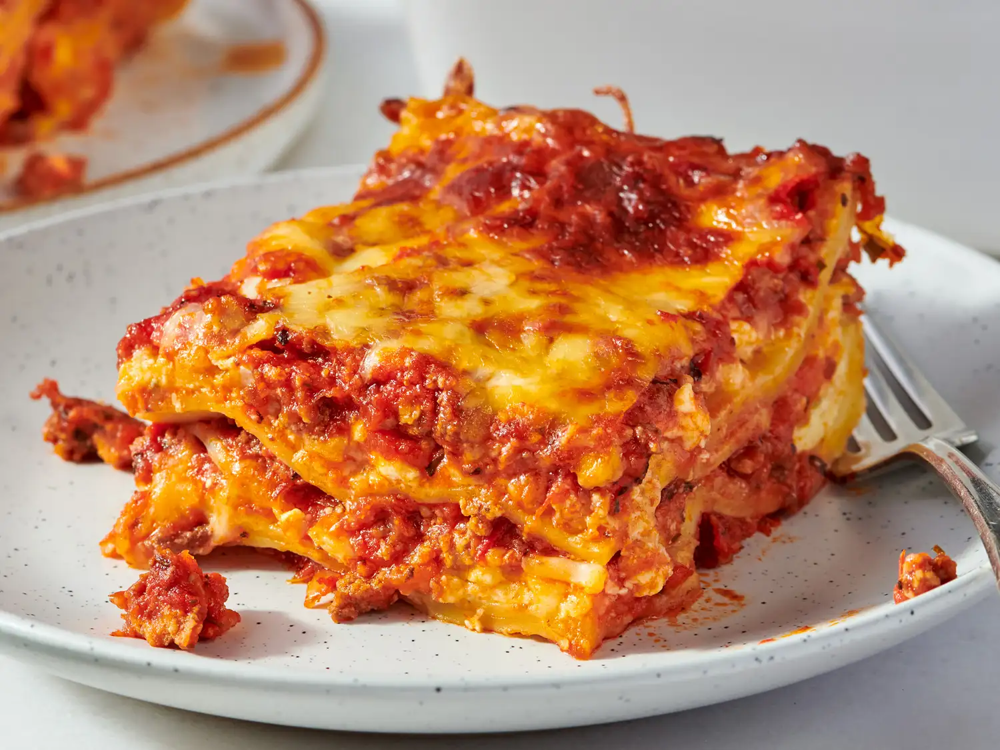

Mom's Lasagna

Description
Mom's special homemade lasagna recipe with meaty, made-from-scratch tomato
sauce.
Ingredients
- Meat: This recipe starts with 1 pound of ground meat (1/2 pound ground pork
, 1/2 pound lean ground beef).
- Onion: A diced onion is cooked with the ground meat.
- Canned tomatoes: You will need a can of tomato sauce and a can of crushed tomatoes.
- Parsley and garlic: For fresh flavor, chop 2 tablespoons of parsley and crush 1
clove of garlic.
- Sugar: A pinch of sugar balances the acidity of the tomatoes.
- Spices and seasonings: This homemade lasagna is seasoned with dried basil, dried oregano,
salt, and ground black pepper.
- Noodles: Lasagna noodles are required. This recipe calls for uncooked, but you can use
the oven-ready variety to save time.
- Eggs: Three eggs make the cheese layer creamy and help bind it together.
Steps
- Gather all ingredients.
- Combine pork and ground beef in a large, deep skillet over medium-high heat;
cook and stir until browned and crumbly, 5 to 7 minutes.
- Add onion and cook until translucent, about 5 minutes.
- Stir in crushed tomatoes, tomato sauce, 1 tablespoon fresh parsley, garlic, basil, salt, oregano, and sugar.
Reduce heat to medium-low and simmer. stirring occasionally, for 30 minutes.
- While the sauce is simmering, bring a large pot of lightly salted water to a boil. Cook lasagna noodles in the boiling
water, stirring occasionally, until tender yet firm to the bite, 8 to 10 minutes.
Drain and set aside. While the noodles
are cooking, preheat the oven to 375 degrees F (190 degrees C).
- Mix cottage cheese, Parmesan cheese, eggs, remaining 1 tablespoon fresh parsley, salt, and pepper in a large bowl combined.
- Assemble lasagna: Spread a spoon or two of sauce over the bottom of a 9x13-inch baking dish just to coat it. Place two layers of noodles
over the sauce to cover.
- Layer with 1/2 of the cheese mixture, 1/2 of the remaining sauce, and 1/2 of the mozzarella cheese. Repeat layers once more using the
remaining noodles, cheese mixture, sauce, and mozzarella.
Cover the baking dish with aluminum foil.
- Bake in the preheated oven for 30 to 40 minutes. Remove the foil and bake until cheese is golden brown, 5 to 10 more minutes.
- Remove from the oven and let stand for 10 minutes before cutting and serving.